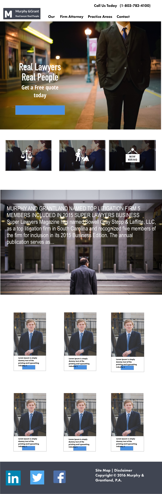

Project Scope
USER EXPERIENCE
Site architecture redesign and mapping. Thumbnails Wireframes
USER INTERFACE
Redesign of the existing website and its components: Homepage register page
Development
HTML5 CSS3 JS / jQuery 3
Discovery
DESCRIBE THE COMPANY/SERVICE THAT THE COMPANY PROVIDES: Murphy & Grantland is a law firm specializing in civil litigation defense for insurance companies and their insureds. The firm began in 1997 and now is comprised of 15 lawyers. WHAT ARE THE COMPANY’S PRIMARY GOALS/OBJECTIVES FOR THE SITE? The company wants a brochure website that tells people who they are and what they do. They dislike the design of their existing site so they’ve come to us to get something that looks better and has a lot more personality. They want a basic brochure site not unlike the one they have now; they just don’t want it to be so “blah.” They’d also like an extranet area so that they can share files with their clients as well as a rotating “Featured Attorney” space on the home page.
WHO IS THE TARGET AUDIENCE FOR THE SITE? WHAT INFORMATION/CONTENT IS THE AUDIENCE LOOKING FOR? The primary audience is potential clients (specifically, people associated with insurance companies) as well as attorneys who may refer cases to M&G. On the most basic level, potential clients are looking for practice area descriptions and attorney bios. While they may enjoy additional content, budget restraints do not allow for the creation of much interactive content. Existing clients are a secondary audience; they don’t visit the site much currently, but an extranet will hopefully change that. Existing clients are coming to the site to gain contact information or to sign onto the extranet for access to files. Both audiences need to be hit with M&G’s personality, expertise, and experience when they visit the site.
DESCRIBE THE COMPANY’S BRAND, PERSONALITY, AND CULTURE: M&G is a conservative law firm. They are not prepared to push the envelope with their marketing. In fact, they do little to no marketing at all. They primarily rely on word of mouth and referrals to grow their business. But they do see the value in a website that looks good and presents information well. They are not interested in integrating a site with social media or utilizing any other new media marketing tactics. They want their personality to shine through. The brand of the company is very much centered around their core values (integrity, quality, diligence, service, efficiency), and they want these values to be a prominent part of the website.
Mockups
Mobile
Tablet
Desktop
Google Fonts
Headlines: AVERIA SERIF Body: MONTSERRAT The above fonts are used from Google's free collection, all accessible within their site. Because these fonts are stored on Google's servers, Conquest Brewery will always be fast and reliable.
Responsive
This site was optimized for a Responsive viewing experience. Responsive Web Design (RWD) is a web design approach aimed at crafting sites to provide an optimal experience with a minimum of resizing and scrolling, across a wide range of devices.